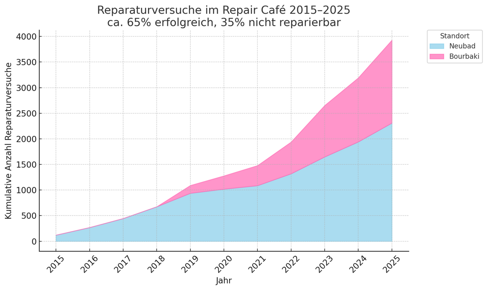
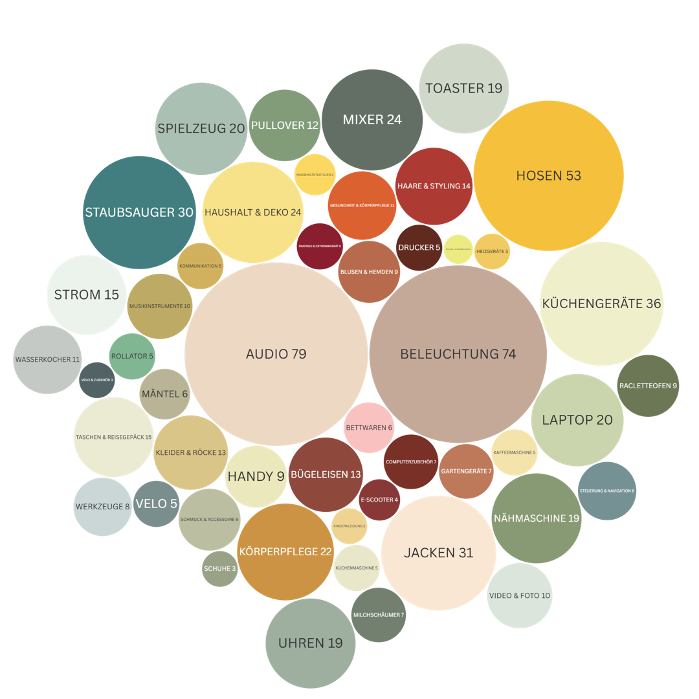

Jahresbericht 2025
Ein Rückblick auf 10 Jahre gemeinsames Reparieren, Lernen und Ressourcen schonen in Luzern.
Ein Jahrzehnt für die Nachhaltigkeit
Am 12. September 2015 fand im Neubad das allererste Repair Café Luzern statt. Gegründet von den Visionärinnen Isabelle Mauchle und Aurelia Meier, begann eine Erfolgsgeschichte. Was als kleine Idee startete, ist heute – dank unzähliger Stunden freiwilliger Arbeit und dem grossen Zuspruch aus der Bevölkerung – eine feste Institution für gelebte Nachhaltigkeit in unserer Stadt.
Wir blicken dankbar auf zehn Jahre voller gelungener Reparaturen, wertvoller Begegnungen und weitergegebenem Wissen zurück.


Unsere Wirkung in Zahlen
Alle Zahlen basieren auf Schätzungen und Auswertungen unserer Reparatur-Statistiken seit 2015.
Zahlen machen unseren gemeinsamen Erfolg greifbar. Sie zeigen, wie jede einzelne Reparatur zu einem grossen Ganzen beiträgt – für die Umwelt und für das Portemonnaie.
Was bedeuten diese Zahlen?
Das Gewicht von 30 afrikanischen Elefanten an CO₂ eingespart.
Entspricht ca. 25 Erdumrundungen mit dem Auto.
Vergleichbar mit 128 Flugreisen von Zürich nach New York.
Vom gesparten Geld könnte man über 55'000 Kaffees im Bistro Neubad kaufen.
Wachstum der Reparaturversuche
Diese Grafik zeigt den wachsenden Berg der kumulativen Reparaturversuche seit 2015. Die stetig steigende Kurve zeigt eindrücklich, wie das Vertrauen und die Bekanntheit des Repair Cafés über die Jahre gewachsen sind.
Erfolgsstatistik 2024/25
Entwicklung der Reparaturannahmen (2015–2025)
Anzahl angenommener Gegenstände nach Standort (2024/2025)
Was wurde repariert?
Von Audio-Geräten bis zu Hosen – die Vielfalt der reparierten Gegenstände zeigt die breite Expertise unserer Helfer.
Herkunft unserer Gäste
Finanzen
Dank der grosszügigen Unterstützung der Stadt Luzern und Spenden können wir unsere Tätigkeit nachhaltig sichern. Hier ein Blick auf unsere Zahlen.
Erfolgsrechnung 2024 & Budget 2025
| Position | Rechnung 2024 (CHF) | Budget 2025 (CHF) |
|---|---|---|
| Ertrag | ||
| Sponsoren (Stadt Luzern) | 5'000.00 | 5'000.00 |
| Erträge Anlässe & Bank | 364.97 | - |
| Total Ertrag | 5'364.97 | 5'000.00 |
| Aufwand | ||
| Verpflegung Events | 3'071.60 | 3'200.00 |
| Ausgaben (Ausflug, GV, Helferessen) | 2'114.00 | 550.00 |
| Werkzeug & Material | 570.60 | 650.00 |
| Werbung & Dienstleistungen | 284.45 | 450.00 |
| Spezial Events | - | 150.00 |
| Total Aufwand | 6'040.65 | 5'000.00 |
| Ergebnis | -675.68 | 0.00 |
Spezial-Events & Wissensvermittlung
Unser Engagement geht über die eigenen Veranstaltungen hinaus. Engagierte Mitglieder wie Ulrich Scholbe und weitere Helfer aus dem Team teilen ihr Wissen und unterstützen aktiv die Verbreitung der Reparatur-Idee in der ganzen Region.

Starthilfe in Horw
Wir freuen uns, dass wir bei der Neueröffnung des Repair Cafés in Horw Starthilfe leisten konnten. Ursina, Werner, Martin und Ulrich waren vor Ort, um ihre Erfahrung zu teilen.
Wissenstransfer
Ulrich Scholbe und David Clormann hielten Vorträge an der HSLU, während an der ISS Rain/Hildisrieden Workshops für Schüler stattfanden, um junge Menschen fürs Reparieren zu begeistern.

Präsenz in der Region
Mit einem Marktstand am "Marktplatz 60plus" in der Luzerner Kornschütte, betreut von Helen und Ulrich, konnten wir zahlreiche neue Kontakte knüpfen und für unsere Sache werben.
Team, Wahlen und der Blick nach vorn
Ein engagiertes Team ist das Herz unseres Vereins. Wir danken für das Bisherige und freuen uns auf das Kommende. Gemeinsam wollen wir Bestehendes stärken und Neues wagen.
Wechsel im Vorstand
An der diesjährigen Generalversammlung kommt es zu wichtigen Wechseln. Wir danken unserer bisherigen Präsidentin Mirjana Lawless herzlich für ihren grossartigen Einsatz. Neu wird Christoph Notter (bisher Vorstandsmitglied) das Präsidium übernehmen. Marcel van de Ven bleibt dem Vorstand erfreulicherweise erhalten, und wir heissen David Clormann als neues Mitglied herzlich willkommen. Ein besonderer Dank gilt auch unserem scheidenden Revisor Ernst Krummenacher. Mit Philippe Hasler kandidiert ein erfahrener Nachfolger.
Ziele für die Zukunft
- Bestehende Strukturen stärken und optimieren.
- Die Zusammenarbeit mit anderen Repair Cafés weiter ausbauen.
- Einen Vereinsausflug im Spätsommer 2025 organisieren.
- Den Fokus auf Sicherheit bei allen Reparaturen erhöhen.
- Eine mögliche Teilnahme an der LUGA 2026 prüfen.